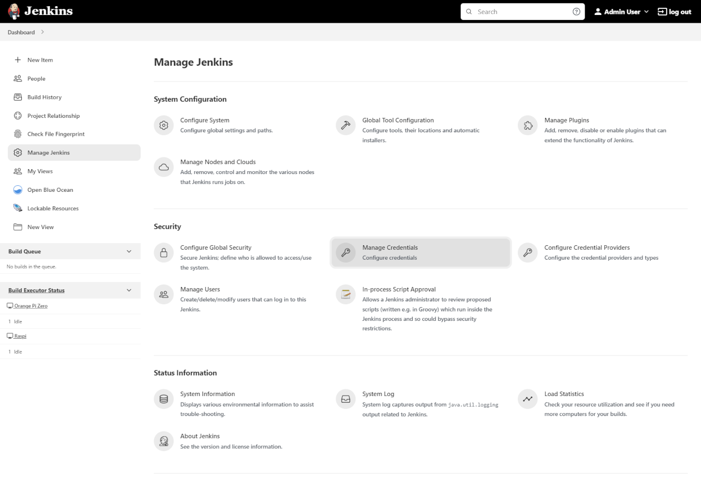
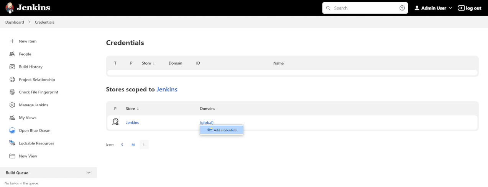
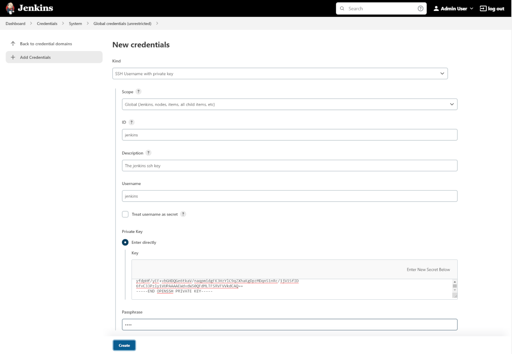
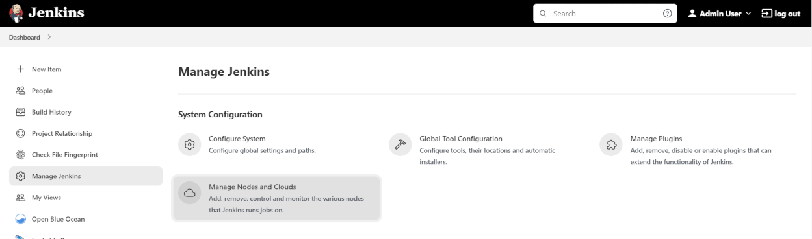
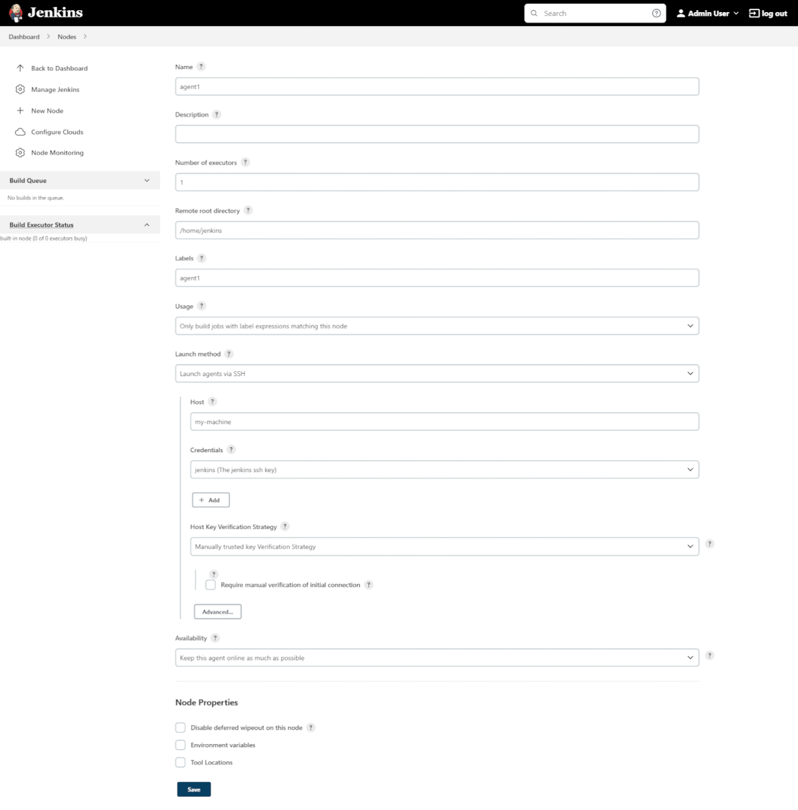
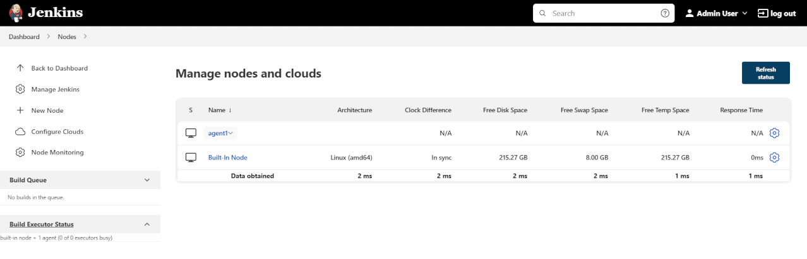
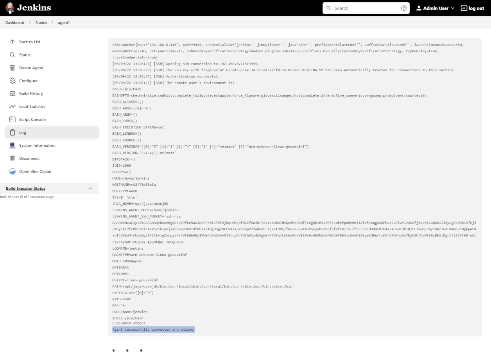
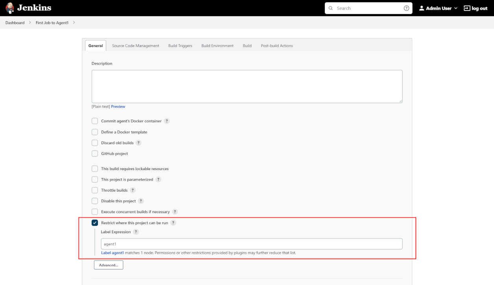
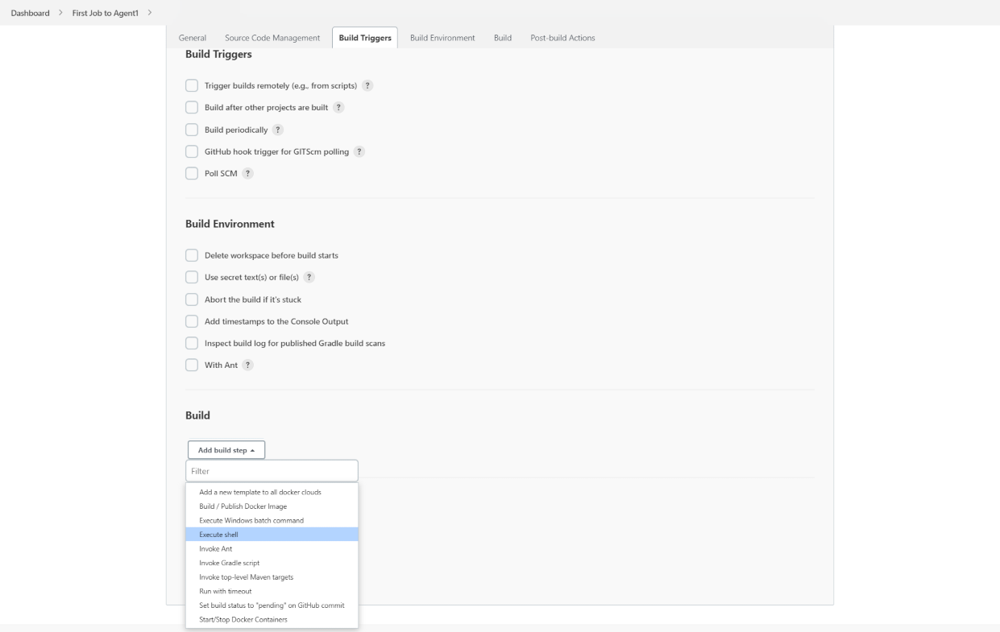
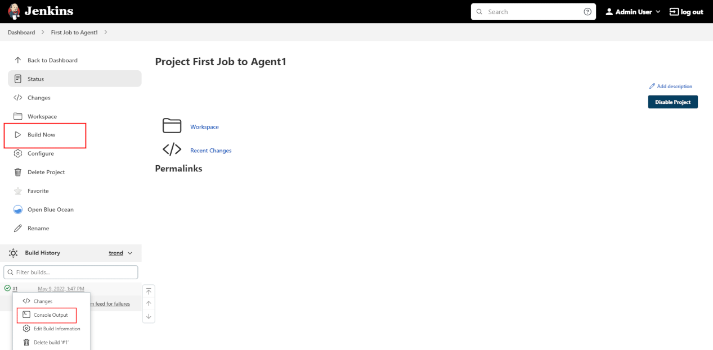

The Jenkins architecture is designed for distributed build environments. It allows us to use different environments for each build project balancing the workload among multiple agents running jobs in parallel.
The Jenkins controller is the original node in the Jenkins installation. The Jenkins controller administers the Jenkins agents and orchestrates their work, including scheduling jobs on agents and monitoring agents. Agents may be connected to the Jenkins controller using either local or cloud computers.
The agents require a Java installation and a network connection to the Jenkins controller. View the 3 minute video below for a brief explanation of Jenkins agents.
Jenkins agents can be launched in physical machines, virtual machines, Kubernetes clusters, and with Docker images. This section connects Docker agents to Jenkins with SSH.
To run this guide you will need a machine with:
Java installation
Jenkins installation
Docker installation
SSH key pair
|
If you need help to install Java, Jenkins and Docker please visit the section Installing Jenkins. |
To generate the SSH key pair, you have to execute a command line tool named ssh-keygen on a machine you have access to. It could be:
the machine on which your Jenkins controller runs
the host (if using containers)
a machine on which you have an agent running
or even your developer machine
|
The SSH key pair generation can be done on any operating system:
|
| Note that you will have to be able to copy the key value to your controller and agent afterwards, so check that you can copy a file content into the clipboard beforehand. |
In a terminal window run the command: ssh-keygen -f ~/.ssh/jenkins_agent_key
Provide a passphrase to use with the key (it can be empty)
Confirm the output looks something like this:
ubuntu@desktop:~$ ssh-keygen -f ~/.ssh/jenkins_agent_key
Generating public/private rsa key pair.
Enter passphrase (empty for no passphrase):
Enter same passphrase again:
Your identification has been saved in /home/ubuntu/.ssh/jenkins_agent_key
Your public key has been saved in /home/ubuntu/.ssh/jenkins_agent_key.pub
The key fingerprint is:
SHA256:XqxxjqsLlvDD0ZHm9Y2iR7zC6IbsUlMEHo3ffy8TzGs
The key's randomart image is:
+---[RSA 3072]----+
| o+ |
| ...o . |
| .o .+ . |
| o+.+ o o |
| ... o.So* . |
| o+ = +.X= |
| o oO + *..+ |
|. oo.o o .E . |
| o... oo.. o |
+----[SHA256]-----+Go to your Jenkins dashboard;
Go to Manage Jenkins option in main menu and click on the Manage Credentials button;

select the drop option Add Credentials from the global item;

Fill in the form:
Kind: SSH Username with private key;
id: jenkins
description: The jenkins ssh key
username: jenkins
Private Key: select Enter directly and press the Add button to insert the content of your private key file at ~/.ssh/jenkins_agent_key
Passphrase: fill your passphrase used to generate the SSH key pair (leave empty if you didn’t use one at the previous step) and then press the Create button

Here we will use the docker-ssh-agent image to create the agent containers.
run the command to start your first agent:
docker run -d --rm --name=agent1 -p 22:22 \
-e "JENKINS_AGENT_SSH_PUBKEY=[your-public-key]" \
jenkins/ssh-agent:alpineNow the container agent1 is running.
Hint: the command docker ps can be used to check if the container is running as expected.
Here we will use the docker-ssh-agent image to create the agent containers.
run the command to start your first agent:
docker run -d --rm --name=agent1 --network jenkins -p 22:22 `
-e "JENKINS_AGENT_SSH_PUBKEY=[your-public-key]" `
jenkins/ssh-agent:jdk11
|
Now the container agent1 is running.
Hint: the command docker ps can be used to check if the container is running as expected.
Additionally, the command docker container inspect agent1 | Select-String -Pattern '"IPAddress": "\d+\.\d+\.\d+\.\d+"' can be used to see the Host to be set in Jenkins for the agent.
Go to your Jenkins dashboard;
Go to Manage Jenkins option in main menu;
Go to Manage Nodes and clouds item;

Go to New Node option in side menu;
Fill the Node/agent name and select the type; (e.g. Name: agent1, Type: Permanent Agent)
Now fill the fields:
Remote root directory; (e.g.: /home/jenkins )
label; (e.g.: agent1 )
usage; (e.g.: only build jobs with label expression…)
Launch method; (e.g.: Launch agents by SSH )
Host; (e.g.: localhost or your IP address )
Credentials; (e.g.: jenkins )
Host Key verification Strategy; (e.g.: Manually trusted key verification … ) 
Press the Save button and the agent1 will be registered, but offline for the time being. Click on it.

You should now see This node is being launched.. If that’s not the case, you can now press the Relaunch agent button and wait a few seconds. You can now click on the Log button on the left, then you should receive
the message: Agent successfully connected and online on the last log line.

If your Jenkins controller does not start the agent via ssh, please check the port you configured on your agent.
Copy it, and then click on the Advanced… button.
You will then be able to paste the port number into the Port textfield.
Go to your jenkins dashboard;
Select New Item on side menu;
Enter a name. (e.g.: First Job to Agent1)
Select the Freestyle project and press OK;
Check the option: Restrict where this project can be run;
Fill the field: label with the agent1 label; (e.g.: agent1)

|
Be careful with white spaces before or after the label. |
Now Select the option Execute shell at Build Section;

Add the command: echo $NODE_NAME in the Command field of the Execute shell step and the name
of the agent will be printed inside the log when this job is run;
press the save button and then select the option Build Now;
Wait some seconds and then go to Console Output page

you should receive output similar to:
Started by user Admin User
Running as SYSTEM
Building remotely on agent1 in workspace /home/jenkins/workspace/First Job to Agent1
[First Job to Agent1] $ /bin/sh -xe /tmp/jenkins15623311211559049312.sh
+ echo $NODE_NAME
agent1
Finished: SUCCESSPlease submit your feedback about this page through this quick form.
Alternatively, if you don't wish to complete the quick form, you can simply indicate if you found this page helpful?
See existing feedback here.